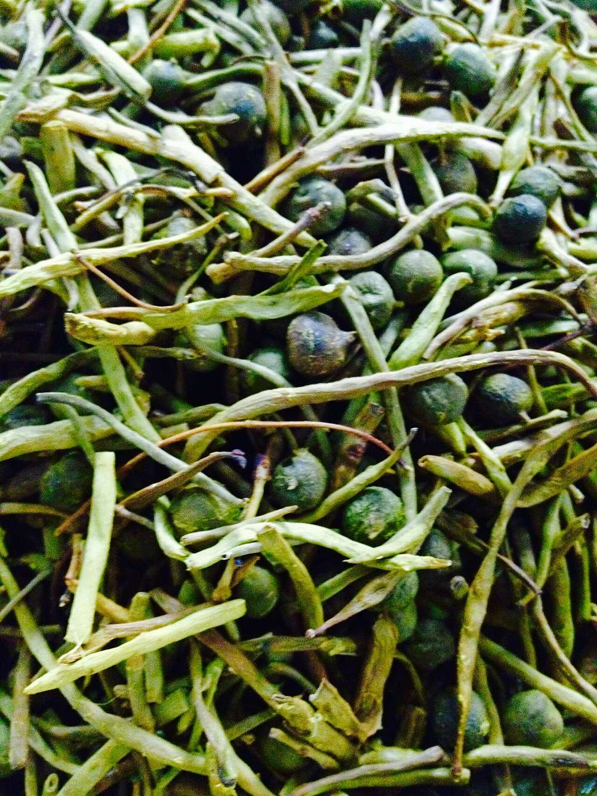

Ker Sangri
dry desert-style beans and berries, tart with amchur and hot with whole red chilli

Contains: milk, mustard
Ingredients
Quantities for 4.
- 300g, strings pulled off and halved Cluster Beansstands in for dried sangri pods, which are hard to find outside Marwar. If you have sangri, use 100g soaked overnight instead
- 3 tbsp Raisinsthe sweet counterweight to the chilli; traditionally these stand in for ker berries
- 6, halved Dried Apricotoptional
- 4 tbsp, whisked smooth Yogurt
- 5 tbsp Mustard Oilthe sharpness is part of the dish
- 6 whole, stems on Dried Red Chilli
- 1 tsp Cumin Seeds
- 1/2 tsp Ajwain
- 1/4 tsp Asafoetidause compounded-free hing to keep this gluten-free
- 1/2 tsp Turmeric
- 2 tsp Coriander Powder
- 1 tsp Chilli Powder
- 1.5 tsp Amchur
- 200ml Water
- to taste Salt
Cookware
stovetop, kadhai
Checked against the ingredient list for ten allergens: milk, egg, fish, crustaceans, tree nuts, peanuts, sesame, mustard, soy and gluten. Brands vary, so read the label on anything new to you.
Before you start
- Soak the raisins in warm water 15 minutes so they plump rather than scorch in the oil.
- If you are using real dried sangri and ker, soak them overnight and boil 20 minutes with a pinch of salt before they go anywhere near the pan.
- Heat the mustard oil to smoking, then cool it slightly before cooking. Raw mustard oil tastes bitter.
Method
- Boil the cluster beans in salted water 8 minutes, until just yielding but still squeaky. Drain well and pat dry.Dry beans fry; wet beans steam and go limp.
- Heat the mustard oil until it smokes, take it off the flame for 30 seconds, then return it to medium heat.
- Crackle the cumin and ajwain, add the whole red chillies and hing, and fry 20 seconds until the chillies swell and darken.
- Stir in the turmeric, coriander powder and chilli powder off the heat for 5 seconds so they bloom without burning.
- Add the drained beans and toss over high heat 4-5 minutes until they take on brown blistered patches.
- Fold in the raisins and apricot, add the water and salt, cover and cook 8 minutes on low.
- Lower the heat right down, stir in the whisked yogurt and cook 4 minutes until it clings to the beans and no liquid pools at the base.Yogurt on high heat will split. Keep the flame at its lowest.
- Finish with the amchur, toss once, and serve dry alongside bajre ki roti and a spoon of ghee.This dish is meant to be dry and oily, not saucy. Cook off any remaining water.
Storage
Keeps 4-5 days refrigerated and genuinely improves by day two. Reheat dry in a pan over medium heat; the oil re-coats the beans as it warms.
Nutrition Good estimate
Low protein: 3 g a serving, 5% of the calories
| Per serving130 g | Per 100 g | |
|---|---|---|
| Calories | 252 kcal | 195 kcal |
| Protein | 3.0 g | 2 g |
| Carbohydrate | 21.8 g | 17 g |
| of which sugars | 14.7 g | 11 g |
| Fibre | 3.8 g | 3 g |
| Fat | 18.8 g | 14 g |
| of which saturated | 2.5 g | 2 g |
| of which unsaturated | 14.7 g | 11 g |
Ingredients given to taste count as zero, so the real figures run a little higher. Nearest database match used for amchur, asafoetida. Estimated from raw ingredients using USDA FoodData Central.
More like this: Vegetarian Indian recipes · Gluten-free Indian recipes · No onion no garlic recipes · Rajasthani recipes
Times, yields, allergens and nutrition are guidance. Use your own judgement on doneness and on storing. More in About.